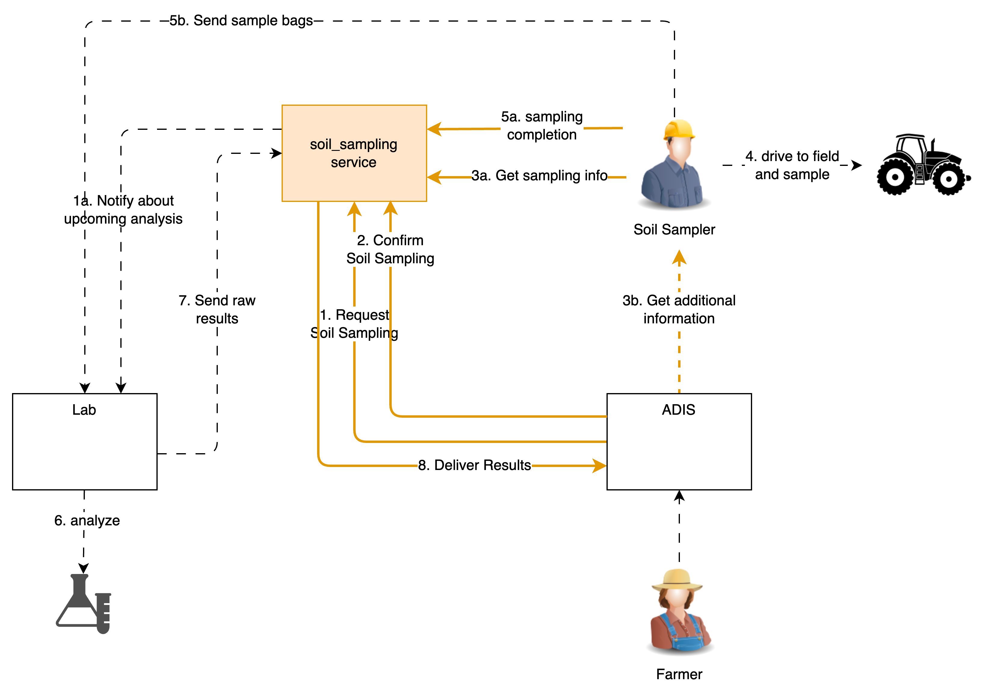

The "soil_sampling" ATLAS Service Template
Abstract
This document describes the specifications for soil_sampling services whose purpose is support the soil sampling process: customer order -> sampling & bagging -> laboratory analysis -> results to customer.
1 Introduction
blabla
2 Terminology
The key words "MUST", "MUST NOT", "REQUIRED", "SHALL", "SHALL NOT", "SHOULD", "SHOULD NOT", "RECOMMENDED", "NOT RECOMMENDED", "MAY", and "OPTIONAL" in this document are to be interpreted as described in RFC 2119 and indicate requirement levels for compliant implementations.
The notation "[xxx]" (xxx in square brackets) is equivalent to "array of xxx".
When used alone, the term "soil_sampling" refers to "soil_sampling ATLAS Service Template". Instead, "soil_sampling service" is equivalent to "an ATLAS Service implementing the soil_sampling ATLAS Service Template".
3 Pre-requisites
A thorough understanding in the following is required for
both service consumers or service provider implementors:
- GeoJSON specifications (https://geojson.org/)
4 soil_sampling Usage Scenarios
the soil_sampling service template standardizes the means by which customers may obtain information about the soil on their fields. It recognizes three main actors: the customer (e.g. farmer, farmer advisor), the soil sampler, the laboratory, as well as an intermediary who operates the soil_sampling services and manages the necessary out of band interactions between these actors.

The high level flow is: the farmer (or an advisor) sends an order to a soil_sampling service that includes the fields, the zones within each field to be sampled, and the stitches to be sampled. The soil_sampling service enables a soil sampler to access the relevant information which includes all necessary data to physically carry out the procedure on the fields. At the end of the collection, the soil sampler delivers collected information to the soil_sampling service, receives back the shipping details and shipping references of an analysis lab to which he sends the bags. Upon reception of the bags, the lab carries out the required analysis and transmits them back to the organization operating the soil_sampling service, which in turn converts the information into the standardized format and returns it to the original requester.
5 Service Template API Overview
This section provides a very high-level summary of the soil_sampling API:
Customer API
Submit order
Get order status
Get order results
Cancel order
Sampler API
List sampling jobs
Renounce sampling job
Acquire sampling job
Release sampling job
Deliver sampling job
Download shipping list
Implementations of soil_sampling may require more parameters that are not included in the API. Such implementations MAY provide end-user configuration and management tools in a proprietary user interface.
Within this section, operations are summarised with simple tables:
+--------------------------------------------+
| logical operation name |
+-------------+------------------------------+
| Inputs | <URL parameters or |
| | request body attributes> |
+-------------+------------------------------+
| Outputs | <body attributes> |
+-------------+------------------------------+
Only the most meaningful parameters are discussed in this document. Please refer to the OpenAPI specifications for full details.
soil_sampling services are not required to handle intense traffic from a single client, such as the one that may result from being directly invoked on user interface interactions in an FMIS, for instance. Implementors MAY generate a 429 TOO MANY REQUESTS error response if the rate of calls exceed some pre-defined quota.
5.1 Customer API Endpoints
These endpoints are designed for customers such as farmers or farmers advisor (via an ADIS). The management of customers and the contractual details are out of scope of the soil_sampling service template and must be managed as needed by each implementation.
5.1.1 Submit Order
This endpoint is used to order a soil sampling on one or more fields.
+--------------------------------------------+
| submit_order |
+-------------+------------------------------+
| Inputs | customer info, fields(zones, |
| | stitches,measurements, ...) |
+-------------+------------------------------+
| Outputs | order id |
+-------------+------------------------------+
soil_sampling services may retrieve any relevant information for preparing estimates from the field_data service (e.g., boundaries, current crop, previous applications, etc.).
Soil sampling is a lengthy process involving a variety of manual operations. Clients may either poll regularly or request to be notified about status changes.
5.1.2 Get Order Status
This function returns the status about a soil sampling order.
+--------------------------------------------+
| order_status |
+-------------+------------------------------+
| Inputs | order id |
+-------------+------------------------------+
| Outputs | order status |
+-------------+------------------------------+
The order status is one of PREPARING, CONFIGURATION_REQUIRED, PENDING, ASSIGNED_TO_SAMPLER, SOIL_SAMPLING_IN_PROGRESS, LAB_ANALYSIS_IN_PROGRESS, READY, FAILED. A CONFIGURATION_REQUIRED status indicates that the end-user is required to perform some manual configuration on the service’s proprietary UI in order to enable the completion of the requested soil sampling; in such case a configuration_url attribute SHOULD be returned along with the status.
5.1.3 Get Order Results
This function returns the results for a soil sampling order. An HTTP error 422 SHOULD be generated if the status of the order is different from READY.
+--------------------------------------------+
| order_results |
+-------------+------------------------------+
| Inputs | order id |
+-------------+------------------------------+
| Outputs | lab analysis results |
+-------------+------------------------------+
5.1.4 Cancel Order
This endpoint cancels a soil sampling order. A soil_sampling service may reject a cancellation with HTTP error 422; the conditions under which a job may be canceled are up to the service provider and his service agreement.
+--------------------------------------------+
| cancel_order |
+-------------+------------------------------+
| Inputs | order id |
+-------------+------------------------------+
| Outputs | - |
+-------------+------------------------------+
Invoking this endpoint causes the order status to become FAILED. If an order whose status is not yet in READY is cancelled and if a notification URL was provided in submit_order, a notification MUST be dispatched.
5.2 Sampler API Endpoints
These endpoints are designed for soil samplers (via an ADIS). The management of soil sampler, contractual details, and the means by which orders are assigned to soil samplers are out of scope of the soil_sampling service template and must be managed as needed by each implementation.
5.2.1 List Sampling Jobs
This endpoint is used list all the outstanding jobs assigned to the soil sampler. Implementations may have additional (proprietary) conditions allowing them to unilaterally remove a sampling job from the list.
+--------------------------------------------+
| sampling_jobs |
+-------------+------------------------------+
| Inputs | - |
+-------------+------------------------------+
| Outputs | list of summary jobs |
+-------------+------------------------------+
Only jobs with status PENDING or ACQUIRED will be returned in the list.
5.2.2 Acquire Sampling Job
This endpoint is invoked when the soil sampler is ready to go and carry out the task. As a result, the full details for the sampling job to be carried out are returned. It is expected that, when acquired, the sampling job will be carried out without delay. An HTTP error 422 SHOULD be generated if the status of the job is different from PENDING.
+--------------------------------------------+
| acquire_sampling_job |
+-------------+------------------------------+
| Inputs | job id |
+-------------+------------------------------+
| Outputs | full details of sampling job |
+-------------+------------------------------+
When successful, the job's status MUST be set to ACQUIRED.
5.2.3 Release Sampling Job
This endpoint is invoked if, for some reason, execution of an acquired soil sampling job must be postponed by the soil sampler. It may be re-acquired at a later time. An HTTP error 422 should be generated if the status of the job is different from ACQUIRED.
+--------------------------------------------+
| release_sampling_job |
+-------------+------------------------------+
| Inputs | job id |
+-------------+------------------------------+
| Outputs | - |
+-------------+------------------------------+
When successful, the job's status MUST be reset to PENDING.
5.2.4 Deliver Sampling Job
This endpoint must be invoked by the soil sampler when all the sampling bags for an order have been collected. An error 422 SHOULD be generated if the status of the job is different from ACQUIRED.
+--------------------------------------------+
| deliver_sampling_job |
+-------------+------------------------------+
| Inputs | job id, bags information |
+-------------+------------------------------+
| Outputs | Printable shipping document |
+-------------+------------------------------+
The shipping document must include the shipping address to which the sampler must send the bags, along with the shipping document itself.
When successful, the job's status MUST be set to DELIVERED.
5.2.5 Renounce Sampling Job
A soil sampler may invoke this endpoint when he is not able to carry out a soil sampling job; cancelled jobs can no longer be accessed by the sampler. It is up to the provider (implementer) to re-allocate the job to a different soil sampler or cancel the customer's order. An error 422 SHOULD be generated if the status of the job is different from PENDING.
+--------------------------------------------+
| renounce_sampling_job |
+-------------+------------------------------+
| Inputs | job id, optional reason |
+-------------+------------------------------+
| Outputs | - |
+-------------+------------------------------+
5 Access and Authentication
Farmers MUST have an account setup on an estimator service in order to authenticate and access API endpoints. The service implementor is responsible for the creation of accounts; it is not covered in the service template specifications.
Unless specifically documented in the OpenAPI specifications, all API calls must include credentials in form of Bearer authentication (also called token authentication). Clients can obtain an access token on behalf of their user from the service's authorization server (see ATLAS service pairing).
Some of the information held by soil_sampling services may be considered sensitive from a GDPR perspective. The service's authorization server SHOULD request the client's end-user consent at service pairing time in order to deliver an access token.
6 Dynamic Behaviour
The purpose of the diagrams in this section is to illustrate communication patterns, more complex than plain request/response API calls, that involve several interactions and/or asynchronous behaviour. Even though a sequence diagram representation is used, the diagrams are by no means to be interpreted as UML Sequence Diagrams. Specifically, in the spirit of focusing on functional behaviour and readability, error handling is deliberately not covered in the diagrams.
6.1 Order Results
There are two methods for determining whether an order results are ready (or failed): by polling the order_status endpoint or by notification.
6.1.1 Polling
After submitting an order, the client polls the order_status endpoint at regular intervals until the returned status is READY or FAILED.
The status may be CONFIGURATION_REQUIRED which indicates that a user action is required on the user interface of the estimator. By convention, in case of CONFIGURATION_REQUIRED status, the service SHOULD return a browser URL to the location where a user can provide additional parameters (as required for a specific service implementation). It is the user interface of the ADIS originating the request to display an appropriate message to the end-user with a clickable link to the provided URL.

7.1.2 Notification
If a notification URL was supplied on the submit_order endpoint, it will be invoked by the soil_sampling service when the status changes.
 soil_sampling services MUST invoke the notification URL supplied by the client with an HTTPS POST command. The payload will be identical to the one that would be returned by the order_status request.
soil_sampling services MUST invoke the notification URL supplied by the client with an HTTPS POST command. The payload will be identical to the one that would be returned by the order_status request.
8.2 General Comments on Notifications
Services must provide best efforts to deliver notifications. A notification is considered successful if the target returns an http result code 2XX.
Errors may occur during notification delivery. Depending on the type of error, services must react in different ways:
i) Network error - the connection to the client's host (from notification URL) cannot be established. The service MUST retry a certain number of times. The number of retries and possible backoff strategy is left at the discretion of the service implementer.
ii) Server errors (5XX result code) - these errors are potentially transient. The same strategy as for Network errors SHOULD be applied.
iii) Client errors (4XX result code) - typically when the notification URL is invalid, or the authentication is invalid/expired. 4XX errors should never be sent for transient client-side conditions and therefore services SHOULD NOT attempt retries.
Upon an excessive number of errors, services MAY give up further notification attempts. In that case, clients can only retrieve completion information via polling.
ANNEX 1 - Measurement Information
| code | Lab measurement | Unit |
| clay | Percentage of clay | % |
| silt | Percentage of silt | % |
| sand | Percentage of sand | % |
| humus | Percentage of humus | % |
| CaCl2 | pH (CaCl2) value | |
| N | Percentage of nitrogen (N) | % |
| P2O5 | Phosphorus (P2O5) content | mg/100g |
| K2O | Potassium (K2O) content | mg/100g |
| B | Boron (B) content | mg/kg |
| Ca | Calcium (CaO) content | mg/100g |
| Cu | Copper (Cu) content | mg/kg |
| MgO | Magnesium (MgO) content | mg/100g |
| Mn | Manganese (Mn) content | mg/kg |
| Na | Sodium (Na) content | mg/kg |
| S | Sulfur (S) content | mg/kg |
| Zn | Zinc (Zn) content | mg/kg |
| N_min | Nitrogen Mineralization | mg N/kg |
| C/N | Carbon / Nitrogen ratio | |
| cec | Cation Exchange Capacity | meq/100g |
| soc | Percentage of soil organic carbon | % |
| bulk_density | Bulk density of sample | g/cm3 |
| weight_samples | Weight of received samples | g |
| weight_dried_samples | Weight of dried samples | g |
| code | Infield measurement | Unit |
| auger_diam | Auger diameter | % |
| weight_samples | Weight of samples (total) | g |
| weight_bagged_sample | Weight of samples (bagged amount) | g |